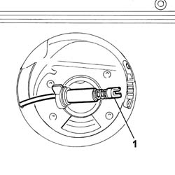
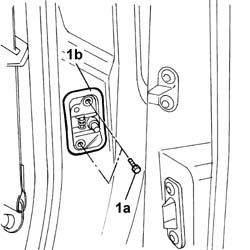
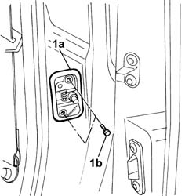

7020D52 device for locking sliding side door with fuel flap open - r r or repair
- Path
- Procedures > 70 FITTINGS > 7020 LOAD CARRYING COMPARTMENT DOORS > 7020D sliding door closure devices > 7020D52 device for locking sliding side door with fuel flap open - r r or repair
- Kind
- repair procedure (removal / refitting; the operation number is the code)
- Applies to
- all engines; all production periods
- Interactive page
- https://sloeber94.github.io/elrnDB-fDbl/en/#/2585071
Applies to: all engines; all production periods; only with equipment: Sliding door
 Removing
Removing
 Refitting
RefittingOp. 7210G82 R.R. FUEL CAP FLAP/COVER
1. Before removing the door lock device from the housing it is advisable to connect a general probe to each individual connector so that the routing of the section of cable removed can be retraced.

Applies to: all engines; all production periods; only with equipment: Sliding door
1. Undo the fixing bolts (1a) and remove the device (1b).

Applies to: all engines; all production periods; only with equipment: Sliding door
Disconnect the end connected to the probe.
Applies to: all engines; all production periods; only with equipment: Sliding door
Refitting
RemovingSecure the end of the device connected to the fuel flap to the probe.
Pull the opposite end of the probe and route the device correctly.
1. Position device (1a), sliding door side, in its seating and secure it with bolts (1b).

Applies to: all engines; all production periods; only with equipment: Sliding door
Release the fuel flap end of the device from the probe.